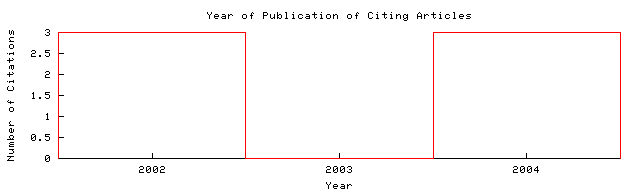

Allan G. Hanbury and Jean Serra  Home/Search
Context Related Home/Search
Context Related
| prip.tuwien.ac.at/...ra_Unit_Circle.pdf Cached: PDF This document uses CoBlitz to cache paper downloads. If your firewall is blocking outgoing connections to port 3125, you can use these links to download local copies.
PS.gz PS Image Update HelpFrom: prip.tuwien.ac.at/...Publications (more) (Enter author homepages) |
Rate this article:     (best) (best)Comment on this article |
Abstract: Images encoding angular information are common in image analysis. Examples include the hue band of color images, or images encoding directional texture information. Applying mathematical morphology to image data distributed on the unit circle is not immediately possible, as the unit circle is not a lattice. Three approaches to solving this problem are presented. First, differencebased operators are studied (e.g., gradient, top-hat). Second, a definition of grouped circular data is suggested,... (Update)
Cited by: More
The Redundancy Pyramid and its Application to Image.. - Hanbury, Marchadier.. (2004) (Correct)
The Morphological Top-Hat Operator Generalised to Multi-channel.. - Hanbury (2004) (Correct)
Analysis of Oriented Textures Using Mathematical Morphology - Hanbury, Serra (2002) (Correct)
Active bibliography (related documents): More All
1.0: Mathematical Morphology in the HLS Colour Space - Allan Hanbury And (2001) (Correct)
1.0: Mathematical Morphology in the L*a*b* Colour Space - Allan Hanbury And (Correct)
0.5: Color Image Segmentation Using Global - Information And Local (Correct)
Similar documents based on text: More All
0.4: Fast Implementationofwaterfallbased - On Graphs Marcotegui (Correct)
0.3: Morphological segmentation produces a Voronoï tesselation of.. - Meyer (2004) (Correct)
0.2: A 3D-polar Coordinate Colour . . . - Hanbury (2002) (Correct)
Related documents from co-citation: More All
5: Morphological Image Analysis: Principles and Applications (context) - Soille - 1999
2: Generic Estimation Procedures for Orientation with Minimum Redundant Information (context) - Forstner - 1999
2: Learning to detect natural image boundaries using brightness and texture - Martin, Fowlkes et al. - 2002
BibTeX entry: (Update)
Allan Hanbury and Jean Serra. Morphological operators on the unit circle. IEEE Transactions on Image Processing, 10(12):1842--1850, December 2001. http://citeseer.ist.psu.edu/hanbury01morphological.html More
@misc{ hanbury01morphological,
author = "A. Hanbury and J. Serra",
title = "Morphological operators on the unit circle",
text = "Allan Hanbury and Jean Serra. Morphological operators on the unit circle.
IEEE Transactions on Image Processing, 10(12):1842--1850, December 2001.",
year = "2001",
url = "citeseer.ist.psu.edu/hanbury01morphological.html" }
Citations (may not include all citations):24 New York: Academic (context) - Serra, Analysis et al. - 1982
24 New York: Academic (context) - Analysis, Volume et al. - 1988
20 Directional processing of color images: Theory and experimen.. (context) - Trahanias, Karakos et al. - 1996
5 Mathematical morphology for angle-valued images (context) - Peters - 1997
4 Morphological algorithms for color images based on a generic.. (context) - d'Ornellas, Boomgaard et al. - 1998
4 Complete ordering and multivariate mathematical morphology: .. (context) - Talbot, Evans et al. - 1998
3 Total ordering based on space filling curves for multivalued.. (context) - Chanussot, Lambert - 1998
3 New York: Springer-Verlag (context) - Rao, for et al. - 1990
2 Morphological operations for color image processing - Comer, Delp - 1999
2 Color segmentation algorithm using an HLS transformation (context) - Demarty, Beucher - 1998
2 A new method of color image segmentation based on intensity .. (context) - Zhang, Wang - 2000

The graph only includes citing articles where the year of publication is known.
Documents on the same site (http://www.prip.tuwien.ac.at/~hanbury/Publications.html): More
Painting Crack Elimination Using Viscous Morphological.. - Allan Hanbury Paul (2003) (Correct)
A 3D-polar Coordinate Colour . . . - Hanbury (2002) (Correct)
The Redundancy Pyramid and its Application to Image.. - Hanbury, Marchadier.. (2004) (Correct)
Online articles have much greater impact More about CiteSeer.IST Add search form to your site Submit documents Feedback
CiteSeer.IST - Copyright Penn State and NEC